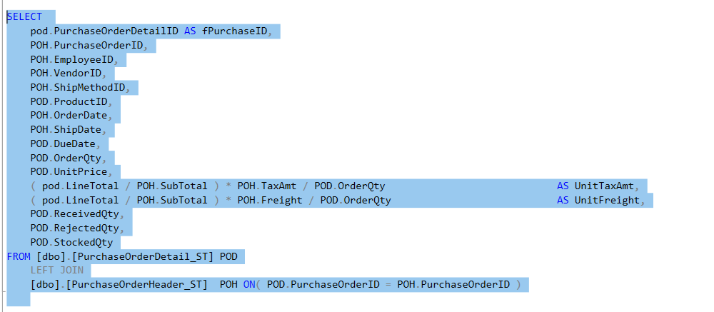
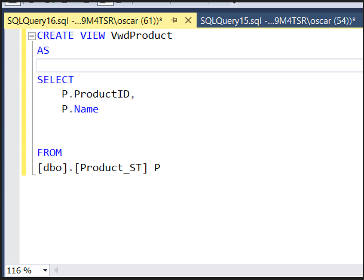
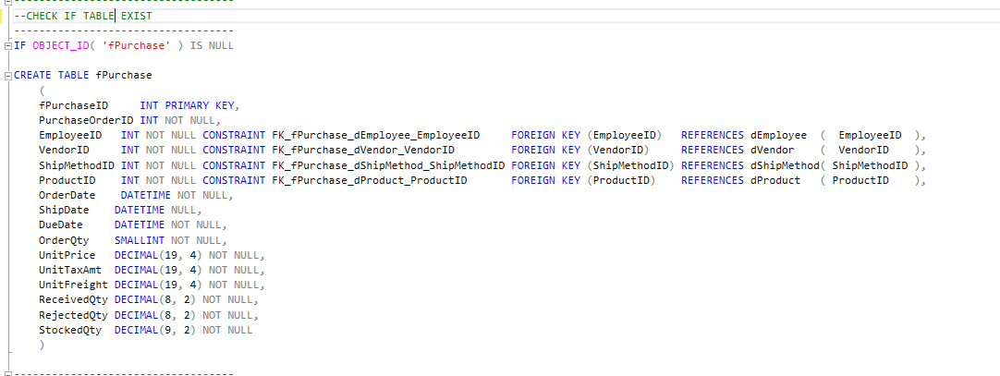
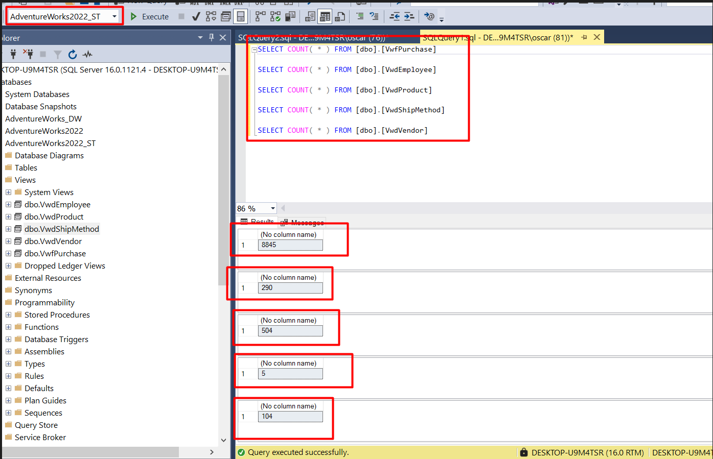
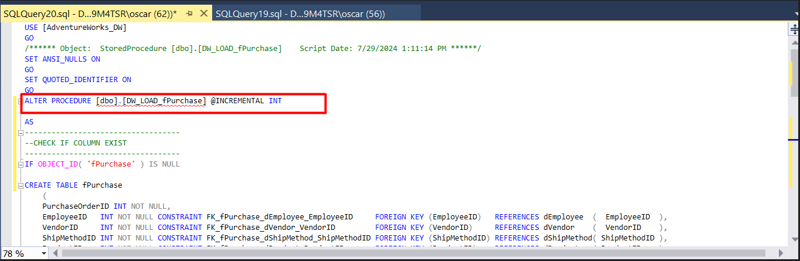
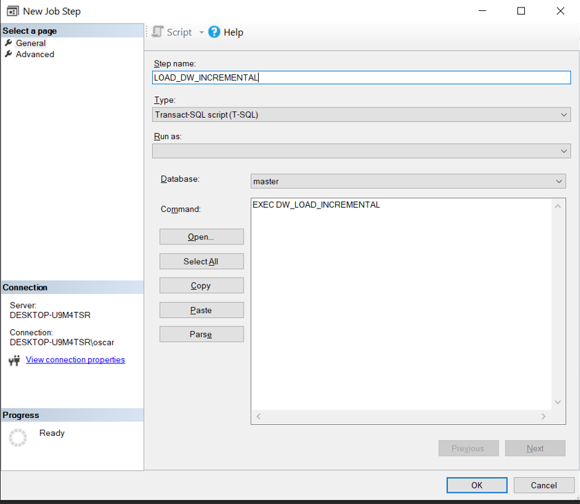
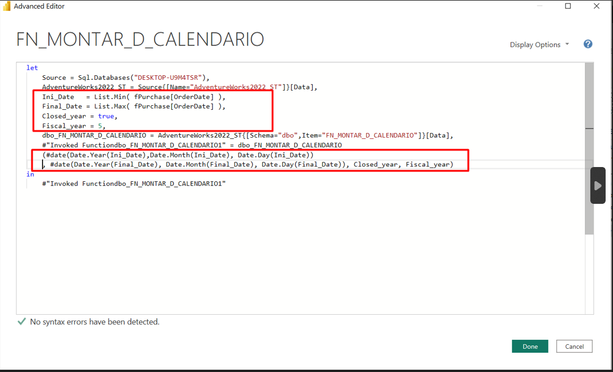

Overview
The purpose of this project is to demonstrate how to model a purchasing datamart using the Microsoft Adventure Works 2022 test database, exclusively through SQL commands. Although there are specialized tools like SSIS and Pentaho that facilitate and automate many of the steps, the goal here is to reinforce data modeling concepts and provide a comprehensive overview of the main steps involved in this process.
Main Steps
-
Transferring Data from OLTP to the Staging Area
The data will be extracted from the transactional database (OLTP) and transferred to a staging area. This process aims to reduce the load on the transactional database and prepare the data for transformation and cleansing.
-
Modeling and Transformation in the Staging Area
In the staging area, raw data will be processed and transformed. Fact and dimension tables will be modeled, performing the necessary joins. This step includes data exploration and defining the type of schema (star schema or snowflake schema, for example) to be used in the Data Warehouse (DW).
-
Loading and Automation in the Data Warehouse (DW)
In the Data Warehouse, tables will be created according to the schema defined in the staging step. Data will be loaded already treated and prepared for analysis. Finally, jobs and automation routines will be created to ensure regular and efficient data updates in the DW.
1. Transferring Data from OLTP to the Staging Area
1.1 Creating the Diagram
Since the goal is to model a purchasing datamart, a diagram was first created to understand how the main tables are connected and to identify the primary keys (PK) and foreign keys (FK). This provides a clear view of the current data model and helps plan the structure of the Data Warehouse.
1.2 Creating the Staging Database
After creating the diagram, a database was created in the same instance that will serve as the staging area. In this database, tables will be created where the data from the tables of interest will be loaded.
Next, the tables will be created in the staging area and the data from the OLTP tables will be loaded into this area.
1.3 Creating the Tables in the Staging Area
In this step, the tables will be created according to the following image:
First, it will be checked if the table already exists in the staging area. If it does not exist, the table will be created with columns and data types identical to those in the OLTP. At this point, assigning keys is not a concern.
After creating or verifying, all tables will be truncated to ensure there is no old data.
Finally, these steps will be encapsulated within a procedure that can be automated through jobs in SQL Server.
For each table of interest, the processes of verification, creation, truncation, and data loading will be repeated. The tables of interest are:
- PurchaseOrderHeader (loaded as shown in the image above)
- PurchaseOrderDetail
- ShipMethod
- Employee
- Vendor
- Product
After loading all the tables, the staging area looked like this:
Here are all the procedures that load the data and can be automated.
1.4 Creating the Loading Procedure for the Staging Area
In this step, a procedure will be created that loads all data from the OLTP to the staging area.
2. Modeling and Transformation in the Staging Area
In this step, the data will be explored according to the previously created diagram, beginning with the potential facts which can be PurchaseOrderHeader_ST and PurchaseOrderDetail_ST since both have dates and represent facts, i.e., purchase history.
By exploring the PurchaseOrderHeader_ST table, it was found that each row represents a complete purchase order. However, this table does not provide details of individual products but rather aggregated information such as the total invoice amount, freight, and taxes.
To keep the fact table at the highest possible level of granularity, the values of TaxAmt and Freight were distributed (allocated) to each individual product. Thus, each row in the fact table will represent a specific product, considering that the same invoice can include multiple products.
To achieve this, the proportion of each LineTotal (i.e., the total amount of each individual line in the invoice header) corresponding to the total invoice amount was determined. With this proportion, the share of each line in the TaxAmt and Freight values was calculated. After calculating the proportions, they were multiplied by the TaxAmt and Freight values to find the tax and freight amounts, and finally, these amounts were divided by the quantity of items purchased to determine the unit tax and freight compatible with the product granularity of the fact table.
To calculate the Tax and Freight values proportionally to the items in the invoice, the following steps were followed:
- Determine how much each LineTotal (the total value of each individual line) represents in relation to the total invoice amount. This proportion will be used to calculate the participation of each line in the total values of TaxAmt (Tax) and Freight (Freight).
- This proportion will be multiplied by the values of TaxAmt and Freight to obtain the specific Tax and Freight values for each line.
- These values will be divided by the quantity of items purchased in each line to find the unit Tax and Freight compatible with the product granularity in the fact table.
Creating Views for Facts and Dimensions
Fact Table View:
Only the most relevant columns for analysis will be chosen. Since it is encapsulated in a view, it is easier to add and remove columns as needed.
View dEmployee:

View dProduct:
View dShipMethod:
View dVendor:

Calendar Table
To create the calendar table, a table function was developed that receives the smallest and largest date from a table as parameters and constructs the table accordingly. This table will be loaded directly into Power BI through the execution of its function and will not create a table within the Staging or DW.
In this project, the main focus was on data modeling, as the data was already quite clean and organized. After creating the views, an ER model was created in Power Architect.

3. Loading and Automation in the Data Warehouse (DW)
Now it's time to create the DW database, its tables, and perform the first load.
Creating the DW database.
Now, the tables will be created according to the diagram created in the previous step. In this step, the PK and FK will be established.
Creating the Dimension Tables:
Note that the ID of each dimension is set as the primary key.
Creating the fPurchase
To maintain consistency when creating the keys, the following pattern was used:

FK_ TableName_ReferencedTableName_ReferencedColumnName FOREIGN KEY (ReferencedColumnName) REFERENCES ReferencedTableName_ReferencedColumnName. This way, it is easier to identify relationships in the fPurchase table. For example, in the first line In the fPurchase table, the EmployeeID column is a foreign key that relates to the EmployeeID column in the dEmployee table.
Note that the dCalendar table does not physically exist within the database; it will be created and related within Power BI.
Now it's time to load the data from ST to DW.
The script above checks if the table exists in DW; if it does not exist, it creates it. After that, it performs the load through the view created in the staging area. Note that DELETE is used instead of TRUNCATE because the table is referenced with fPurchase, and if there is data in fPurchase, the dEmployee table cannot be truncated as it would violate table integrity.
After creating the scripts, the related procedures are also created to help automate the loads by creating jobs.
All the procedures were created as shown in the image below:
Now a procedure is created that performs the loads from ST to DW.
Detail: Note that to be able to load without error, the fPurchase table first needs to be truncated due to the keys created to maintain database integrity. Also, note that the fPurchase load should be done last.
Creating the Job
Now it's time to automate the ETL by creating jobs. After the full load, a job will be created that only executes an incremental load, simulating a real scenario where only the last year is loaded, although in a real scenario it might make more sense to load only the previous day.
Creating a step that loads the staging area.
Creating a step that loads the staging area.
The same steps are repeated, but now to load the DW.
In summary, these are the steps of the automation.
Testing to Ensure Everything Runs Properly
Validating the Number of Rows Transferred from ST to DW
In the image below, the number of rows in the ST:
And comparing it with the number of rows in the DW:
Performing an Incremental Load
To simulate an incremental load, the last year will be deleted from the fPurchase table in the DW.
Checking the largest date after deleting the rows.

Now the largest year is 2013.
For the incremental load, the logic is that only the data larger than the last date will be loaded.
Thus, the already created procedure for full load can be altered by creating a parameter that will check if the load will be incremental or not.
First, an incremental parameter is added to the procedure.
The logic is that if the selected parameter is 0, the load will be full; otherwise, if incremental is 1, the load will be incremental.
Testing now when the parameter is 0.
When it is 0, it loads only 8,845 rows, as expected. Testing now when the incremental is equal to 1.
As expected, when the incremental is 1, it falls into the ELSE of the IF, loading only the data larger than the largest order date in the DW.
Editing the JOBS:
For the FULL_LOAD load, just insert the parameter 0 and change the procedure.
And for the incremental load, the same procedure is used, but the parameter is set to 1 and the dimension loads and the table truncate are commented out. As there is already data in the dimensions, running the procedures will give an error. Additionally, the fPurchase table cannot be truncated as the largest date from it is needed.
In the job, the created procedure is run.
Final Test
1. Performing the full incremental load.
2. Deleting the year 2014 from the database.
After deletion, there are 3,567 rows.
3. Performing the incremental load.
4. Checking the number of rows again.
Noting that only the rows for the year 2014 are loaded.
After Creating the Datamart, Bringing the Information to Power BI
Importing the tables and also the function to create the calendar table.
Also importing the calendar creation function.
To make it dynamic.

Finally, this is the final model.
Conclusions
This simple project shows how to model a datamart using only SQL code from extracting from the transactional database to consumption in Power BI. The focus was not so much on data treatment, as other projects will focus on that, but on the ETL step-by-step, modeling, and automation. Obviously, in a real scenario, there would be data and databases that may not be so organized, but the step-by-step process could indeed, with some caveats, be replicated for a small business environment. For larger projects, it is necessary to use more robust tools such as Pentaho and SSIS to have greater control over the steps.